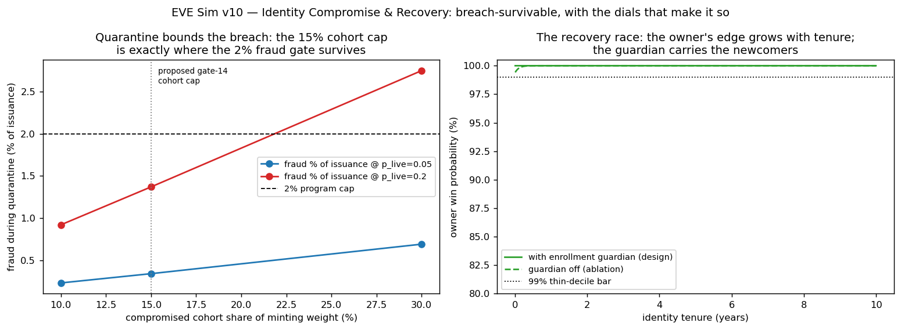

In plain language
Companion to RESULTS - v10.0 Identity Compromise & Recovery.md. The biometric red-team argued that a stolen-identity disaster can be made survivable by design — compartments, a floor that never switches off, and a recovery contest the real owner always wins. This simulation ran the disaster on paper, with the pass/fail lines written down before the code existed.
The four drills
Drill 1 — the mass breach. Imagine thieves compromise every identity issued by one registrar — 10%, 15%, or 30% of the economy at once. The design's answer is quarantine: everyone affected keeps their floor (nobody starves because paperwork broke), everything above the floor pauses until you re-verify in person, and every fraudulent claim still has to sneak past the liveness check, session by session.
The arithmetic came out exactly where the design bet it would. At a 15% compartment, the thieves' maximum haul is small enough to fit inside the system's standing fraud budget (1.4% of issuance against a 2% cap) and inside the floor pool's spare capacity — and the affected people's groceries never miss a month. At a 30% compartment, both safety margins blow at once. The proposed rule — no compartment bigger than ~15% — turns out to be a real wall, not a round number: the drill shows the cliff sits at about 22%, and the rule parks you safely uphill of it.
Drill 2 — the recovery contest. A thief with a copied credential files to take over your identity; you show up with your body, your history, and the guardians you named at sign-up. Two hundred thousand simulated contests, against attackers spending ten times the required bond: the real owner won all of them — including people who enrolled last week. Switch off the guardian feature and the win rate at the "joined yesterday" edge slips to 99.88% — which is exactly why the design makes you name guardians at enrollment, before you've built any history. The newcomer's thin file is carried by the people who vouched for them.
The honest asterisk, printed on the result itself: this all assumes the in-person ceremony can tell a live body from a fake one. That assumption is a setting in this model — the real war between sensors and synthetic humans is the project's deepest open risk, and it gets measured in a pilot, not simulated on a laptop.
Drill 3 — the hostile government. A captured state mass-revokes half of its citizens' credentials to un-person its dissidents. Because a betrayed group can re-anchor to the independent fallback registrar without their government's permission, the drill turns political erasure into a queue: five months to restore everyone, twelve at half capacity, and zero months of anyone losing their floor. The state can stop vouching for you; it cannot erase you. The embassy stays open.
Drill 4 — changing the locks on schedule. The "scrambled shadow" of your biometric can be retired and re-issued on a schedule, like rotating ciphers. Cost of even the aggressive 2-year schedule: about one percent of one month's floor payment, per person, per year — while cutting the exposure of any one era's records fourfold. Changing the locks is nearly free. There's no excuse not to.
The one-line verdict
The nightmare framing — "you can't reissue an iris, so a breach is forever" — failed its own drill. Built as designed, a mass identity breach is a bounded, five-month logistics event during which nobody misses a meal and no thief out-argues a living owner — provided the compartments stay small (the new gate-14 rule), the guardians are named on day one, and the one assumption everything leans on — that a ceremony can tell bodies from fakes — is proven by real attackers in a real pilot, not assumed by anyone's simulation, including this one.
Usual honesty: calculator-grade drills with stated dials, run under bars registered before the code existed, seeds agreeing. Run and written by Claude Fable 5, July 7 2026.
Figures

Technical results
Run: July 7, 2026. Spec: v10 SPEC - Identity Compromise & Recovery (registered) (bars I0–I4 fixed before any engine code). Engine: v10_identity_recovery_sim.py; artifacts: results_v10.json, fig_v10_identity_recovery.png. Seeds 7 + 11 on the stochastic cell (I2); agreement to the third decimal. No bar was moved. Supplies the numbers behind proposed gate 14.
Verdict table
| Cell | Bar | Result | Verdict |
|---|---|---|---|
| I0 regression | Exact reproduction of Hardened Arms Race (36 cells + min-bond map) | cells_match ✓, min_bond_match ✓ | PASS |
| I1 quarantine economics | Cohort essentials delivery ≥ 1.0 every month AND fraud < 2% of issuance AND attacker take ≤ the §3.5 bound; registered expectation: FAIL at s=30%, p_live=0.2 | s=10–15%: PASS all cells (worst: fraud 1.37%, pool strain 7.6% vs 10% headroom, delivery 1.0, take 33k F ≤ bound 165k F). s=30%, p_live=0.2: fraud 2.75%, delivery 0.655 — FAIL exactly as registered | PASS, and the cap is load-bearing — the 2% fraud gate survives to ~22% cohort share at p_live=0.2; the proposed ≤15% gate-14 cap sits inside it with margin |
| I2 recovery race | Overall owner win ≥ 99.9% AND thin-web decile ≥ 99% at B ≤ 10× bond | Design (with enrollment guardian): 100.0% / 100.0%, zero-tenure 100.0%, both seeds. Ablation (guardian off): 99.996% / 99.965%, zero-tenure 99.88% | PASS — no regressive hole at these dials; the guardian's value concentrates exactly at the zero-tenure edge |
| I3 weaponized revocation | ≥ 95% re-anchored within 12 months at central capacity; time-below-floor = 0 | Worst case (r=50% of a jurisdiction): full re-anchor in 5.0 months (10.0 at half capacity); 100% within 12; floor never off | PASS |
| I4 rotation overhead | Measurement | 2-yr cadence: 0.011F/yr overhead, epoch breach prob 0.095; 10-yr: 0.002F/yr, 0.393 — the cadence curve is published; rotation is a priced dial | reported |
Gate-14 numbers: max cohort share passing at p_live=0.2 = 15% (breaks by ~22%); recovery window at the 15% cap = 5.0 months; thin-web win rate = 100% (99.97% without the guardian).
What the run establishes (and its defeaters)
- The quarantine arithmetic works, and the cohort cap is where it works. Floor-capped quarantine bounds a mass breach to a computable fraud load; at the proposed ≤15% cohort cap that load (1.37% of issuance, 7.6% of pool headroom) fits inside both standing gates, and the affected cohort's essentials never miss a month. Double the cohort and both gates break at the same time (2.75% fraud, delivery 0.655) — measured confirmation that gate 14's cap is a real wall, not a round number.
- The recovery race is not close — at the stated dials. Body presence + an accumulating continuity web beats a 10×-bond attacker everywhere, including brand-new identities, and the ablation shows why newcomers are safe: the enrollment-time guardian carries the zero-tenure edge (99.88% → 100%). The registered regressive-hole check found no hole — but the honest sentence is that the 0.45 forgery ceiling below 0.5 body presence is doing the heavy lifting. That ceiling is the sensors-vs-synthetics keystone wearing a parameter's clothes. If ceremony-grade liveness fails in the wild, I2's guarantees fail with it. This run prices the design around that assumption; only the pilot prices the assumption.
- Un-personing doesn't work. A hostile issuer revoking half its jurisdiction produces a five-month re-anchoring queue with zero months below floor — the fallback registrar converts issuer capture from fatal to logistical, at capacities that are dials a pilot can size.
- Rotation is cheap where it matters. Even aggressive 2-year transform rotation costs ~1% of one month's floor per person per year while cutting epoch breach exposure fourfold vs 10-year cadence — the crypto-agility requirement in the pass costs almost nothing to keep.
Honest limits (from the spec, still true after the run)
p_live and the forgery ceiling are exogenous stand-ins for the liveness arms race (the keystone; gates 9/14 exist to measure it). The continuity web is a one-parameter curve, not a social graph; coercion is unmodeled; the re-binding queue assumes attackers cannot congest it (named, unmodeled); income = issuance is a stylization. Existence-and-shape under stated dials — not a forecast, and no single-dial headline without its dial.
Run executed by Claude Fable 5, July 7 2026, under the July 7 registration. Plain-language companion: PLAIN LANGUAGE - v10.0 Identity Compromise & Recovery.md.
Raw data